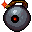

小型爆弾の射出 Launch Bomblet
英語版 CrawlWiki の記事「Launch Bomblet」(0.33 向け、2026-05-29 版)の翻訳です。原文の著者は編集履歴をご覧ください。
この記事は 0.33 の時点の内容で、最新の 0.34 とは違うところがあるかもしれません。
| 射線を無視する弾道軌道で小型爆弾を撃ち出し、射程内の一体の対象に軽いダメージを与えて、その近くに小型爆弾を配置する。
術者に隣接する敵や、近くに小型爆弾が着地する余地のない敵は狙えない。 |
術者に隣接する敵や、近くに小型爆弾が着地する余地のない敵は狙えない。}}
小型爆弾の射出はモンスター専用の呪文で、小型爆弾を呼び出して対象に撃ち込み、いくらかのダメージを与える。
小型爆弾の射出を唱える敵は次のとおり。
- E

君主爆弾(2d8 ダメージ)

変更履歴
- この呪文は 0.33 でゲームに追加された。